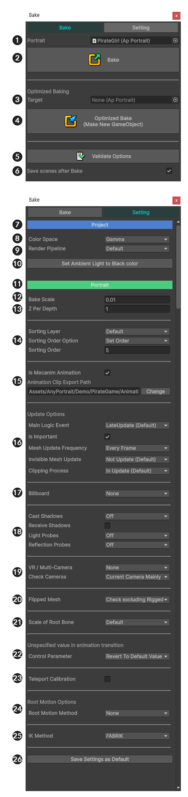
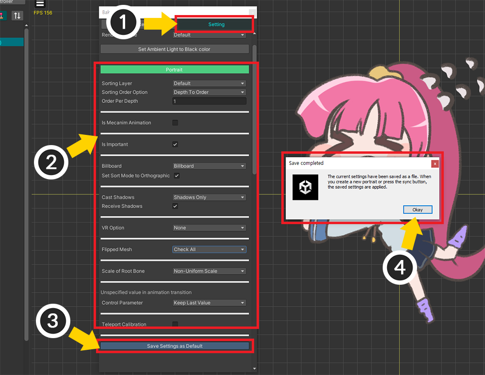
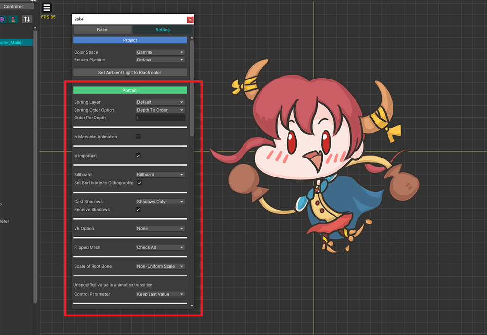
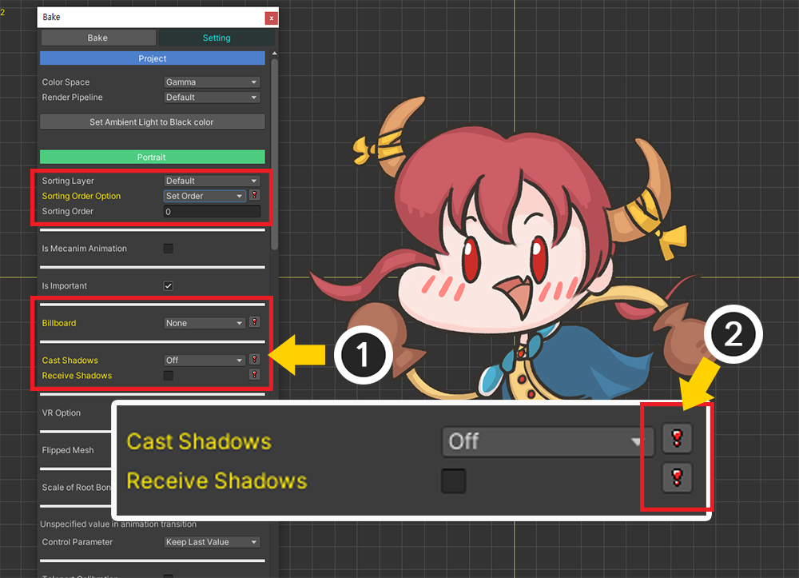

AnyPortrait > 메뉴얼 > Bake 다이얼로그
Bake 다이얼로그
1.6.0

v1.1.0 부터 Bake 다이얼로그의 UI가 일부 변경되었습니다.
화면 상단의 Bake 버튼을 누르면 Bake 다이얼로그가 나타납니다.
다이얼로그의 상단에는 Bake 탭과 Setting 탭이 있습니다.
Setting 탭에는 Bake를 위한 apPortrait의 설정들이 포함되어있습니다.
[ Bake 탭 ]
1. Portrait : 현재 편집 중인 apPortrait입니다.
2. Bake 버튼 : 유니티 씬으로 Bake를 합니다.
3. Optimized Baking Target : 최적화된 Bake를 하는 대상입니다.
4. Optimized Bake 버튼 : 최적화된 Bake를 합니다.
5. Validate Options 버튼 : Bake 옵션이 현재의 프로젝트의 설정에 맞는지 체크하는 다이얼로그를 엽니다. (관련 페이지)
6. Save scenes after Bake : Bake와 동시에 현재의 씬을 저장하여 작업물이 안전하게 저장되도록 만듭니다.
[ Setting 탭 ]
7. Project 카테고리
: 다음의 설정들은 프로젝트 단위로 변경되며 저장됩니다.
8. Color Space
: 유니티의 색 공간(Gamma / Linear)에 맞게 Bake를 할 수 있습니다. (관련 페이지)
9. Render Pipeline
: 프로젝트의 Render Pipeline (Default / Scriptable Render Pipeline)에 맞게 설정하는 옵션입니다.
(Unity 2019부터 지원되는 옵션입니다.)
이 옵션은 클리핑 메시가 정상적으로 렌더링되도록 만듭니다.
Render Pipeline과 재질에 관한 설정은 다음의 페이지를 참고하세요.
(재질 라이브러리 / Universal Render Pipeline 연동하기)
10. Set Ambient Light to Black color
: 유니티 씬의 Ambient 색상을 검은색으로 만들어서 캐릭터가 지나치게 밝게 렌더링되는 것을 방지합니다.
11. Portrait 카테고리
: 다음의 설정들은 캐릭터(Portrait) 단위로 저장됩니다.
12. Bake Scale : AnyPortrait의 좌표계와 유니티의 좌표계가 다르므로, 이를 보정하기 위한 크기 비율입니다.
13. Z Per Depth : 각각의 메시들의 Z 간격입니다. 너무 작으면 Z-Fighting 문제가 발생할 수 있습니다.
14. Sorting Layer / Order
: 메시들의 출력 순서를 어떤 방식으로 결정하는지에 대한 옵션입니다. (관련 페이지)
- Sorting Layer : 출력 순서를 결정하는 프로젝트 설정에서 지정된 레이어입니다.
- Sorting Order Option : 메시들에 Sorting Order를 어떻게 할당할지에 대한 옵션입니다. 동일한 값을 넣거나 순서에 따라 다른 값을 지정할 수 있습니다.
- Sorting Order : 메시에 일괄적으로 동일한 Sorting Order값을 할당합니다.
- Order Per Depth : 메시들의 Depth 차이에 따라 Sorting Order를 얼마만큼 다르게 할당할지를 정합니다.
15. Mecanim
: 메카님(Mecanim)을 사용하기 위한 옵션입니다. (LINK
- Is Mecanim Animation : 메카님을 사용할지 여부입니다.
- Animation Clip Export Path : Animator에 포함되는 Animation Clip 에셋들이 생성되는 경로입니다.
16. Update 옵션
: 게임 플레이시 업데이트가 어떻게 될 지에 대한 옵션들입니다.
- Main Logic Event : 메인 로직이 어느 이벤트에서 호출될지 설정합니다. (관련 페이지)
- Is Important : 중요하지 않는 오브젝트나 NPC인 경우 최적화를 위해서 Important를 끄고 업데이트를 제한할 수 있습니다. (관련 페이지)
- Mesh Update Frequency : 낮은 FPS에서 애니메이션을 재생하는 옵션입니다. (관련 페이지)
- Invisible Mesh Update : 모디파이어나 스크립트에 의해 보이지 않는 메시들을 업데이트할지 여부를 설정합니다. Physics 모디파이어를 적용하는 등의 경우, 보이지 않는 메시들도 계속 업데이트되도록 만들 수 있습니다.
- Clipping Process : 스크립트 실행 순서 문제로 인하여 클리핑 렌더링 문제가 발생한다면, 클리핑 메시 처리 시점을 변경할 수 있습니다. (관련 페이지)
17. Billboard
: 빌보드가 활성화되면 Perspective 카메라를 이용하는 것이 가능하여 캐릭터를 3D 씬에 배치하는 것이 가능합니다. (관련 페이지)
- Billboard : 빌보드 적용 여부 및 방식을 결정합니다.
- Set Sort Mode to Orthographic : 빌보드를 사용하는 경우, 현재 프로젝트의 정렬 모드를 강제로 Orthographic으로 설정하여 빌보드 렌더링이 더 잘되도록 만듭니다.
- Parent's Rotation : 부모 객체의 회전이 빌보드에 적용될지 여부입니다.
18. Shadow / Probe
: 생성되는 Mesh Renderer의 그림자(Shadow)와 프로브(Probe)에 관한 속성을 일괄적으로 지정할 수 있습니다.
(기본적으로 제공되는 Shader에서는 Receive Shadows를 켜도 그림자가 적용되지는 않습니다.)
19. VR / Multi-Camera
: VR을 이용하거나 여러개의 카메라를 이용하는 경우의 렌더링 옵션입니다.
이 옵션에 따라 클리핑 메시와 빌보드 계산이 해당 환경에 맞게 동작합니다.
(VR로 빌드하기 / 여러 개의 카메라로 렌더링하기)
- VR / Multi-Camera : VR 또는 다중 카메라에 따른 렌더링 방식을 결정하는 옵션입니다.
- Mask Texture Size : VR에서의 클리핑 마스크에서의 렌더 텍스쳐(Render Texture)의 해상도를 조절할 수 있습니다.
- Check Cameras : 인게임에서 카메라의 개수를 체크하는 방식에 관한 옵션입니다.
20. Flipped Mesh
: 메시의 크기가 반전될 때, 정상적으로 렌더링되도록 보정하는 기능에 관한 옵션입니다. 옵션에 따라서 리깅된 메시도 이 처리에 포함될 지 여부를 결정합니다. (관련 페이지)
21. Scale of Root Bone
: 자식 메시 그룹과 해당 메시 그룹의 루트 본과의 크기 연산에 관한 옵션입니다. (관련 페이지)
22. Unspecified value in animation transition
: 전환되는 다음 애니메이션에서 타임라인 레이어로 지정되지 않은 값들이 기본값으로 복구될 지, 아니면 마지막 값이 유지될 지 결정하는 옵션입니다.
- Control Parameter : 컨트롤 파라미터가 미지정되는 경우에 대한 옵션입니다.
23. Teleport Calibration
: 캐릭터가 1프레임동안 해당 옵션의 거리 이상으로 움직이는 "텔레포트"가 발생할 경우, 물리 효과를 일시적으로 감소시키는 옵션입니다.
- Teleport Calibration : 텔레포트 발생시 물리 효과를 일시적으로 감소시킬지 여부입니다.
- Position / Rotation / Scaling : 1프레임동안 각 속성이 일정 값을 초과하여 변하면 "텔레포트"가 발생한 것으로 간주합니다.
24. Root Motion
: 애니메이션의 움직임을 부모 GameObject에 적용하는 옵션입니다. (관련 페이지)
- Root Motion Method : 루트 모션 적용 방식입니다.
- Options Per Axis : 각 축별로 루트 모션의 적용 방식을 다르게 지정할 수 있습니다.
- Parent Transform Type : 루트 모션이 적용되는 부모 객체의 타입입니다.
25. IK Method
: IK 컨트롤러가 어느 알고리즘에 의해서 동작하는지 결정할 수 있습니다. (관련 페이지)
26. Save Settings as Default
: 현재의 Bake 설정들을 "기본값"으로서 저장하여 다른 캐릭터(Portrait)에도 빠르게 적용할 수 있게 만듭니다.

Ambient Light 설정을 AnyPortrait에 맞게 바꾸기
1.1.2
AnyPortrait에서 캐릭터를 만든 다음 Bake를 하면, 캐릭터가 지나치게 밝게 나타나는 경험을 한번씩 겪어보셨을 것입니다.
이것은 AnyPortrait의 캐릭터가 씬의 Ambient Light의 적용을 받기 때문입니다.
제대로 적용하기 위해서는 Ambient Light를 검정색으로 바꾸어야 하는데, Bake 다이얼로그에서 이 작업을 빠르게 할 수 있습니다.

Bake 직후에 유니티 씬에서의 렌더링 화면입니다.
원래 색상과 다르게 지나치게 밝게 렌더링이 되고 있는 것을 볼 수 있습니다.

Bake 다이얼로그의 Setting 탭에서 Set Ambient Light to Black Color 버튼을 클릭합니다.

Ambient 설정이 바뀌면서 정상적인 밝기로 렌더링이 되는 것을 볼 수 있습니다.
Render Pipeline 옵션 자동으로 변경하기
1.3.5

프로젝트의 렌더 파이프라인을 기본값이 아닌 URP 등으로 설정했다면, Bake의 설정 중 Render Pipeline을 Scriptable Render Pipeline으로 위와 같이 변경해야 합니다.
특히 클리핑 메시를 정상적으로 동작하게 만들기 위해서는 필수적으로 설정해야합니다.
AnyPortrait v1.3.5에서는 프로젝트의 렌더 파이프라인과 Bake 설정이 맞지 않는 경우 이를 확인해주어 자동으로 변경해주는 기능이 추가되었습니다.

Bake를 실행할 때 만약 URP를 사용하거나 또는 그 반대인 상황에서 Render Pipeline 옵션이 적합하지 않는다면 위와 같은 메시지가 나타납니다.
Change Now 버튼을 눌러봅시다.

현재 프로젝트의 렌더 파이프라인 설정에 맞게 자동으로 변경이 됩니다.
만약 메시지의 Do not show this message 버튼을 누르면 해당 메시지는 더이상 나타나지 않습니다.
메시지를 다시 나오게 만들고자 한다면 설정 다이얼로그에서 옵션을 활성화하세요. (관련 페이지)
안내
- 유니티 2020 또는 그 이상의 버전에서만 이 메시지가 나타납니다.
- URP 외의 다른 Scriptable Render Pipeline는 인식하지 못합니다.
Bake 설정을 다른 캐릭터에 빠르게 적용하기
1.4.2
캐릭터마다 Bake 설정들을 매번 설정하는 것은 번거로운 일입니다.
설정된 설정값들을 기본값으로 설정하여 번거로운 작업을 피하는 방법을 소개합니다.

(1) Setting 탭을 선택합니다.
(2) Bake시 적용될 옵션들을 각각 확인하여 적절히 설정합니다.
(3) Save Settings as Default 버튼을 누릅니다.
(4) 안내 메시지를 확인하고 Okay 버튼을 누릅니다.

(1) Bake 설정값이 저장되었다면 위와 같이 UI가 변경될 것입니다.
(2) 기본 설정값이 저장되었음을 알리는 메시지가 보여집니다.
(3) 만약 저장된 값을 삭제하고 싶다면 Remove Default Settings 버튼을 누르면 됩니다.
참고
설정값은 프로젝트 폴더에 "AnyPortrait_ProjectSettings.txt"라는 이름의 텍스트 파일로 저장됩니다.
이 파일은 버전 관리 툴과 호환되므로, 다른 개발 환경에서 동기화하여 활용하기 좋습니다.

새로운 캐릭터를 만들고 Bake 다이얼로그를 열어봅시다.
기본값으로 저장되었던 것과 동일하게 설정된 것을 볼 수 있습니다.
(다만, 기본값으로 저장하기 이전에 생성된 캐릭터의 설정은 변경되지 않습니다.)

(1) 만약 저장된 기본값과 다른 옵션을 선택했다면 위와 같이 UI가 변경됩니다.
(2) 여기서 "!" 버튼이 나타나는데, 이 버튼을 누르면 해당 옵션이 저장된 기본값으로 복구됩니다.
Bake 설정이 저장되는 방식에 대해서

Bake의 설정 중 일부는 프로젝트 단위로 저장되며, 일부는 캐릭터 단위로 저장됩니다.
만약 "Project" 카테고리의 옵션을 변경한다면, 그것은 다른 캐릭터들에도 바로 적용이 됩니다.
반대로 "Portrait" 카테고리의 옵션을 변경하더라도 다른 캐릭터들은 영향을 받지 않습니다.